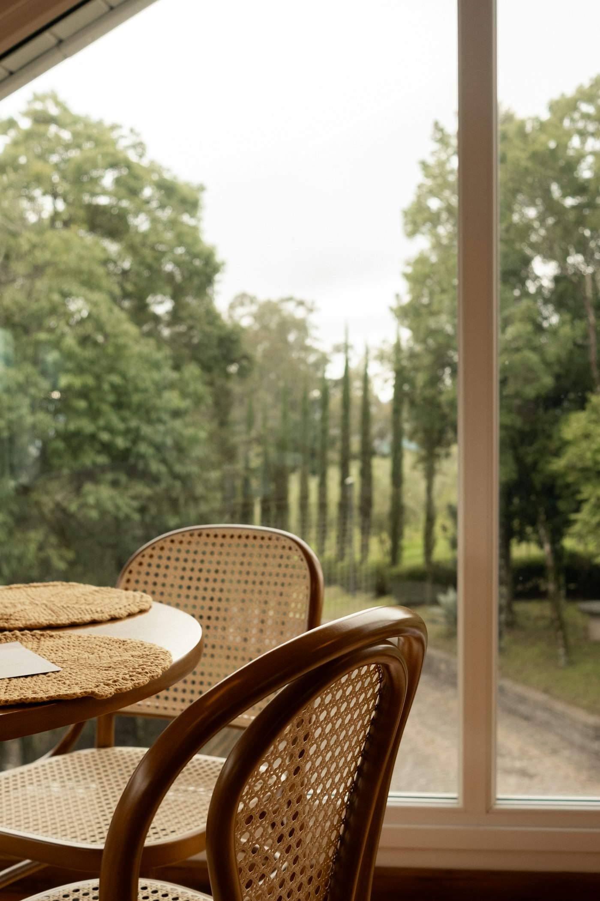
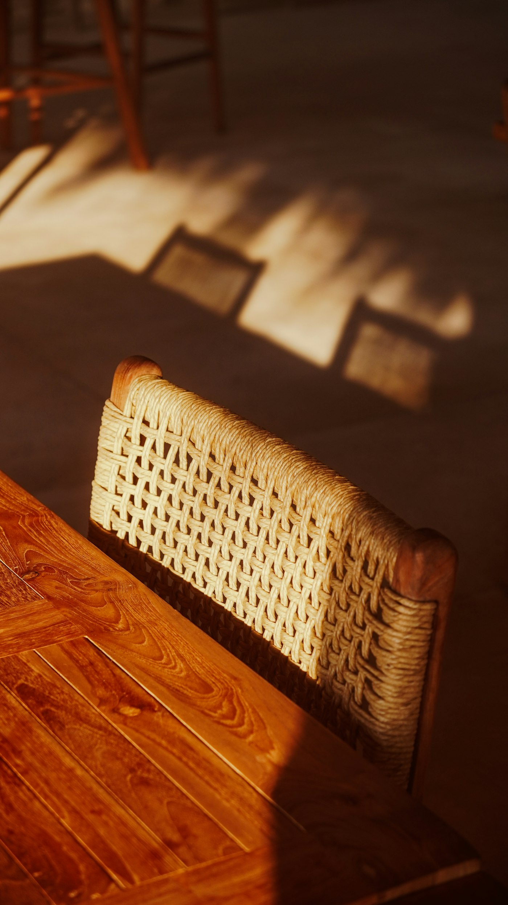
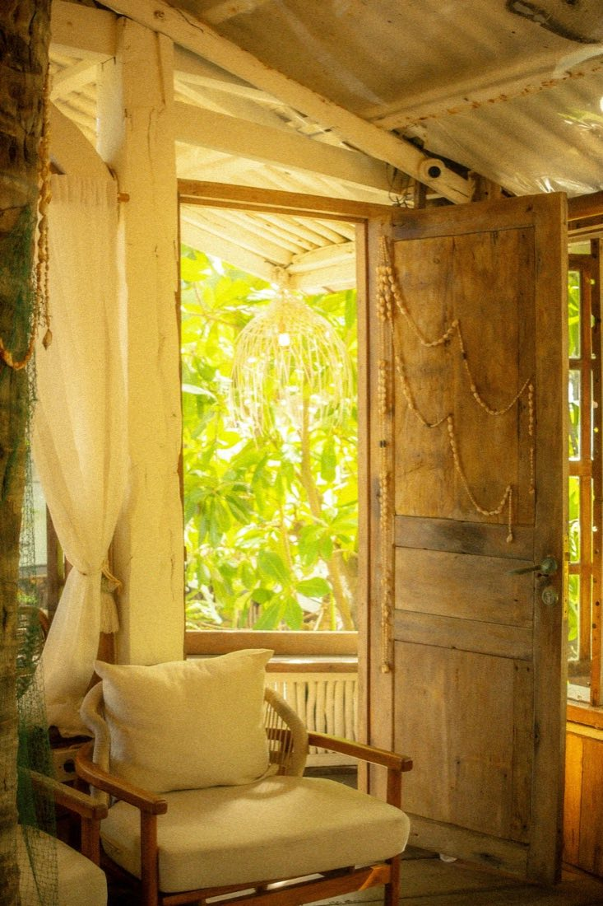
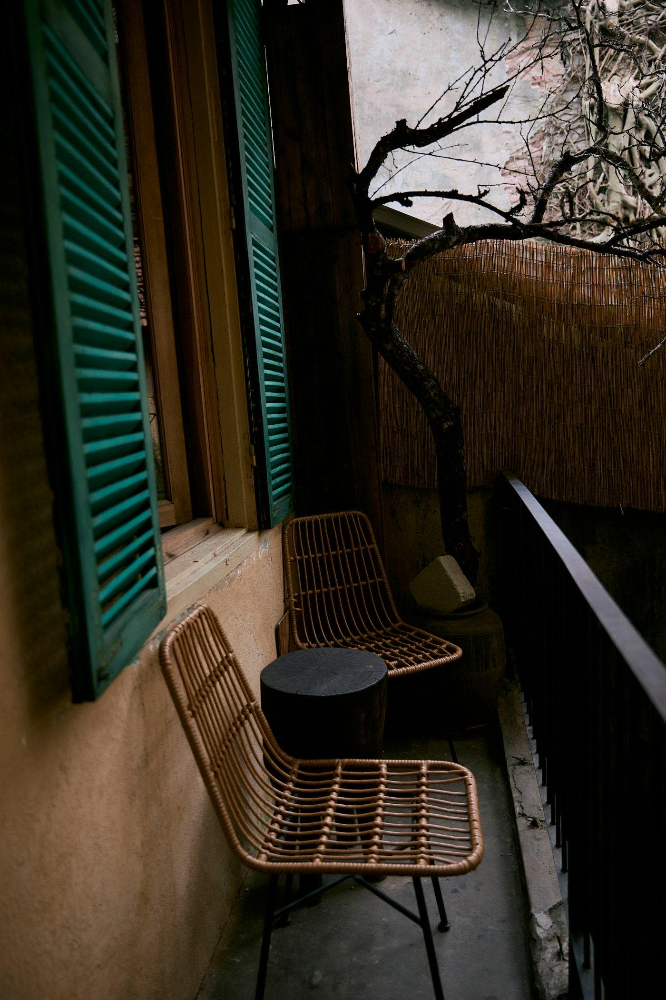

The owners wanted a café that felt like sitting in someone's garden, not a restaurant, with seating that could shift from a quiet breakfast crowd to a busier evening one without rearranging tables.
Project 05
Maram Café
A 60-seat garden café built to work as well at breakfast as it does after dark.

- Location
- Goa
- Type
- Café
- Size
- 1,500 sq ft
- Budget
- ₹35 lakhs
- Timeline
- 4 months
- Year
- 2025
- Status
- Completed
01
The brief

02
The design
Most of the seating sits under a covered outdoor deck with a few indoor tables for the monsoon months. Furniture is light enough to move, and the lighting shifts from bright in the morning to warm and low by evening on a simple timer.


03
The materials
Reclaimed wood tables, rattan chairs, and local laterite stone for the low garden walls, all picked to hold up outdoors through a Goa monsoon with minimal upkeep.
